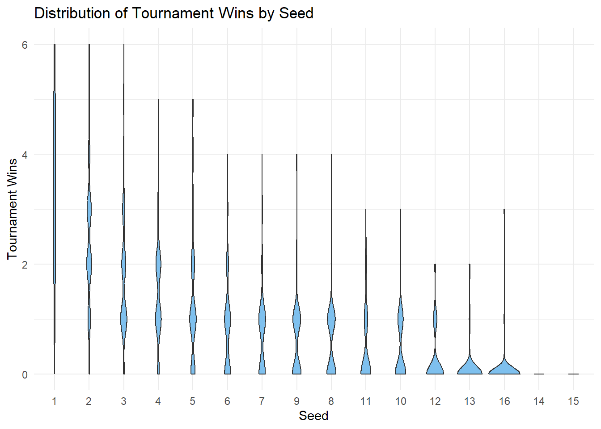

This data set contains historical records of every NCAA Division I Women’s Basketball Tournament appearance since the tournament began in 1982. Sourced from official NCAA data, it captures tournament results across more than four decades of collegiate women’s basketball.
Key Features of the Dataset
Each row represents a single team’s appearance in a specific tournament year and includes information such as:
Tournament Seed – Seed assigned to the team
Tournament Results – Number of wins, losses, and how far the team advanced
Bid Type – Whether the team received an automatic bid or was selected at-large.
Season Records – Regular season, conference, and total win/loss stats and percentages
Conference Information – Team’s conference name, record, and rank within the conference
Division – Regional placement in the tournament bracket (e.g., East, West)
Home Game Indication – Whether the team played its first game at home
Purpose and Use Cases
This dataset is designed to support analysis of:
Team performance over time
Impact of seeding and bid types on tournament results
Conference strength
Emergence and decline of winning teams in women’s college basketball
Case Study
Objective
How much does a team’s tournament seed predict its success in the NCAA Division I Women’s Basketball Tournament?
This analysis explores the relationship between a team’s seed and its results on a tournament to evaluate whether teams with lower seeds consistently outperform ones with higher seeds.
By examining historical data, we aim to:
Identify trends in tournament advancement by seed level
Seeding is intended to reflect a team’s regular-season performance. In theory, lower-numbered seeds (e.g., #1, #2) are given to the strongest teams, who should be more likely to advance. But upsets, bracket surprises, and standout performances from lower seeds raise questions like “How reliable is seeding as a predictor of success?”
Understanding these dynamics can inform fan expectations and bracket predictions.
Methodology
1. Data Cleaning & Processing
First, let’s load our data and remove all NA values for our variables of interest seed and tourney_wins.
library(tidyverse) # Reading Datamarchmadness <-read_csv("../../data/clean/womens-march-madness-clean.csv") # Review total rowsnrow(marchmadness)
[1] 2092
# Removing NA but only in selected columnsmarchmadness <- marchmadness |>drop_na(seed, tourney_wins)# Notice no rows were removednrow(marchmadness)
[1] 2092
# Visualize the data sethead(marchmadness)
# A tibble: 6 × 20
year school seed conference conf_wins conf_losses conf_wins_pct conf_rank
<dbl> <chr> <dbl> <chr> <dbl> <dbl> <dbl> <dbl>
1 1982 Arizona … 4 Western C… NA NA NA NA
2 1982 Auburn 7 Southeast… NA NA NA NA
3 1982 Cheyney 2 Independe… NA NA NA NA
4 1982 Clemson 5 Atlantic … 6 3 66.7 4
5 1982 Drake 4 Missouri … NA NA NA NA
6 1982 East Car… 6 Independe… NA NA NA NA
# ℹ 12 more variables: division <chr>, reg_wins <dbl>, reg_losses <dbl>,
# reg_wins_pct <dbl>, bid <chr>, first_game_at_home <chr>,
# tourney_wins <dbl>, tourney_losses <dbl>, tourney_finish <chr>,
# total_wins <dbl>, total_losses <dbl>, total_wins_pct <dbl>
2. Exploratory Data Analysis
We can see which seeds appear more often.
Note that, the seed = 0 designation in 1983 notes the eight teams that played an opening-round game to become the No.8 seed in each region. For this exercise, we will note take them into consideration.
Spearman's rank correlation rho
data: marchmadness$seed and marchmadness$tourney_wins
S = 2602468566, p-value < 2.2e-16
alternative hypothesis: true rho is not equal to 0
sample estimates:
rho
-0.7252169
We can note that from this correlation test, with a P-value below 0.05, we can reject the null hypothesis, denoting that seed and wins are likely associated.
This can be visualized with the following plot:
ggplot(marchmadness, aes(x = seed, y = tourney_wins)) +geom_jitter(width =0.2, height =0.2, alpha =0.5) +geom_smooth(method ="lm", se =TRUE, color ="blue") +labs(title ="Seed vs Tournament Wins",x ="Seed (lower is better)",y ="Tournament Wins") +theme_minimal()
`geom_smooth()` using formula = 'y ~ x'

However, we can note that given that we’re setting tourney_wins as a response, our linear regression model may output negative values at high seed values. Therefore, a Poisson Regression model is better suited, considering that tourney wins is a count variable and is always non-negative.
poisson_model <-glm(tourney_wins ~ seed, family ="poisson", data = marchmadness)summary(poisson_model)
Call:
glm(formula = tourney_wins ~ seed, family = "poisson", data = marchmadness)
Coefficients:
Estimate Std. Error z value Pr(>|z|)
(Intercept) 1.454260 0.035992 40.41 <2e-16 ***
seed -0.260116 0.007231 -35.97 <2e-16 ***
---
Signif. codes: 0 '***' 0.001 '**' 0.01 '*' 0.05 '.' 0.1 ' ' 1
(Dispersion parameter for poisson family taken to be 1)
Null deviance: 3438.8 on 2083 degrees of freedom
Residual deviance: 1610.3 on 2082 degrees of freedom
AIC: 4238.8
Number of Fisher Scoring iterations: 5
marchmadness$predicted_wins <-predict(poisson_model, type ="response")ggplot(marchmadness, aes(x = seed, y = tourney_wins)) +geom_jitter(width =0.3, alpha =0.5) +geom_line(aes(y = predicted_wins), color ="darkred", size =1.2) +labs(title ="Poisson Regression: Predicted Tournament Wins by Seed",x ="Seed",y ="Tournament Wins") +theme_minimal()
Warning: Using `size` aesthetic for lines was deprecated in ggplot2 3.4.0.
ℹ Please use `linewidth` instead.
Based on this results, and using an \(\alpha = 0.05\), we reject \(H_o\) since the p-value is lower than the threshold. Hence, seed is statistically associated with tourney_wins.
4. Overdispersion Testing
It is noteworthy that Poisson assumes that the mean is equal to the variance of the count variable. If the variance is much greater, we might need a Negative Binomial model. We can do an dispersion test to evaluate this matter.
Letting \(Y_i\) be the \(ith\) Poisson response in the count regression model, in the presence of equidispersion, \(Y_i\) has the following parameters:
\(E(Y_i)=\lambda_i, Var(Y_i)=\lambda_i\)
The test uses the following mathematical expression (using a \(1+\gamma\) dispersion factor):
\(Var(Y_i)=(1+\gamma)*\lambda_i\)
with the hypotheses:
\(Ho:1 + \gamma = 1\)
\(Ha: 1 + \gamma > 1\)
When there is evidence of overdispersion in our data, we will reject \(H_o\).
library(AER)dispersiontest(poisson_model)
Overdispersion test
data: poisson_model
z = -1.01, p-value = 0.8437
alternative hypothesis: true dispersion is greater than 1
sample estimates:
dispersion
0.9484459
With an \(\alpha = 0.05\), we fail to reject \(H_o\) since the p-value is above 0.05. Hence, the poisson_model does not have overdispersion.
5. Discussion
This analysis examined the relationship between a team’s tournament seed and its performance in the NCAA Division I Women’s Basketball Tournament. The results suggest that:
Seed strongly predicts performance: Lower-numbered seeds (higher-ranked teams) tend to win more games on average. The correlation between seed and wins was statistically significant, with higher seeds associated with fewer wins.
Poisson regression supports seeding as a predictor: The Poisson regression model confirmed that seed is a significant predictor of tournament wins, as expected for a count variable like wins.
There is a lot of variation around the prediction: While seeding generally reflects team strength, upsets and unexpected performances do occur, showing that other factors also influence tournament outcomes.
Seeding is an important predictor of success, but clearly other factors influence the results. It sets expectations, but unexpected performances still shape March Madness.